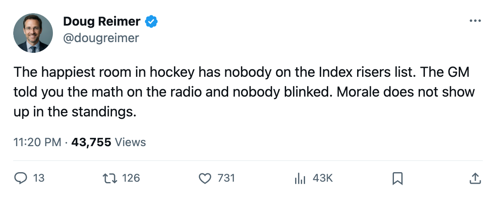
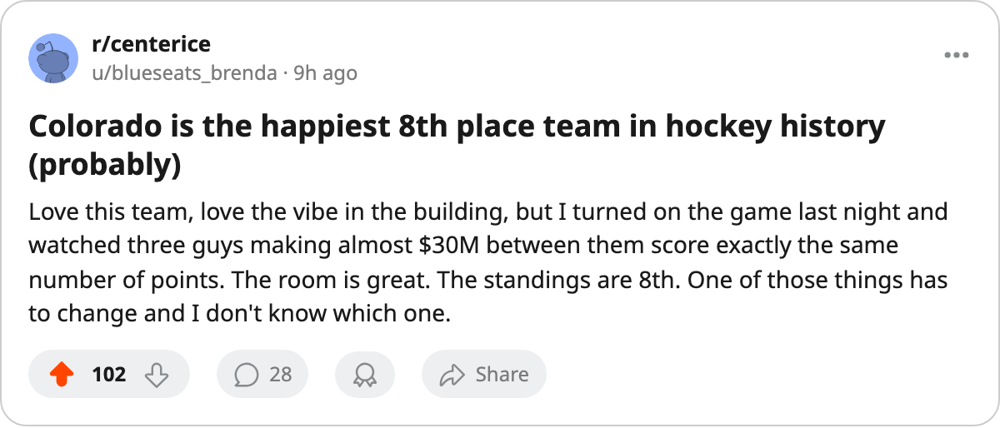

Forsberg Is 8 Below His Base. His Room Has the Best Morale in Hockey.
Colorado has no risers on the Development Index, four men making $29.45M sitting at 100 morale with 1 year left, and the GM told The Tunnel he cannot keep them all.
 Doug ReimerAnalytics editor, ex-video coach · The Slot Report
Doug ReimerAnalytics editor, ex-video coach · The Slot Report
 Peter Forsberg95 sits 8 points below his base grade of 97 on the Bureau's Development Index. His overall reads 89 today. He carries $9.90M in salary with 1 year left. His club's average morale is 98.3, the highest of 30 rooms in hockey.
Peter Forsberg95 sits 8 points below his base grade of 97 on the Bureau's Development Index. His overall reads 89 today. He carries $9.90M in salary with 1 year left. His club's average morale is 98.3, the highest of 30 rooms in hockey.
The two facts are connected. The room is happy because the contracts are expiring. The Index is down because the man with the biggest contract is playing at a pace of 90 instead of last season's 129, he is 32, and there is no second contract waiting.
 Colorado Avalanche has committed $66.38M, the 4th-highest payroll in the league. Its 36 points put it 8th in the Western Conference and tied for 15th with
Colorado Avalanche has committed $66.38M, the 4th-highest payroll in the league. Its 36 points put it 8th in the Western Conference and tied for 15th with  Montreal Canadiens across the whole league. The per-point cost is $1.84M, which is 22nd of 30 clubs. The room is happier than every one of the 21 teams ahead of it on that list.
Montreal Canadiens across the whole league. The per-point cost is $1.84M, which is 22nd of 30 clubs. The room is happier than every one of the 21 teams ahead of it on that list.
The club does not have a single player on the Bureau's published risers. It does not appear in the top 20 or the top 15 fallers either, but the arithmetic on Forsberg's two published numbers, base 97 and overall 89, places him 8 below the floor of the published crash list.
The six at 100
Colorado fields 6 players at perfect morale. Four of them form the top of the lineup and carry $29.45M in combined salary. The desk logged the 1-year class in late November; the GM confirmed the shape on The Tunnel this month. Three of the four have identical point totals this season.
| player | pos | age | salary | overall | gp | pts | pace | mpg | morale |
|---|---|---|---|---|---|---|---|---|---|
 Paul Kariya89 Paul Kariya89 | LW | 31 | $10.11M | 83 | 32 | 35 | 90 | 21.7 | 100 |
| Peter Forsberg | LW | 32 | $9.90M | 89 | 32 | 35 | 90 | 22.1 | 100 |
 Teemu Selanne86 Teemu Selanne86 | RW | 35 | — | 80 | — | — | — | — | 100 |
 Milan Hejduk88 Milan Hejduk88 | RW | 29 | $2.50M | 82 | 32 | 35 | 90 | 22.0 | 100 |
All three sit at exactly 35 points, exactly pace 90, exactly 100 morale. The fourth, Selanne, does not appear on the league's top-30 scoring list this season. The three who do have not moved the team above 8th in the conference.
The scatter is the league's 30 rooms plotted on morale and points. The correlation is loose:  Toronto Maple Leafs sits at 92.5 morale with 53 points, 16th in happiness and 1st in the standings.
Toronto Maple Leafs sits at 92.5 morale with 53 points, 16th in happiness and 1st in the standings.  New York Rangers at 90.1 has 47. The clubs above 94 morale with fewer points than Colorado are
New York Rangers at 90.1 has 47. The clubs above 94 morale with fewer points than Colorado are  Vancouver Canucks (34) and
Vancouver Canucks (34) and  Florida Panthers (27). Colorado, Florida and Vancouver occupy the entire high-morale, low-points quadrant. The rest of the top 8 in morale either has 40 or more points or is Toronto, which can afford a bad room because it has the deepest roster.
Florida Panthers (27). Colorado, Florida and Vancouver occupy the entire high-morale, low-points quadrant. The rest of the top 8 in morale either has 40 or more points or is Toronto, which can afford a bad room because it has the deepest roster.
What the GM can keep
Kerry Morassutti told The Tunnel's Jan Kowalczyk that he would not keep all four. Asked whether the three top salaries could coexist with a rebuilt roster, he said: "You've got to pick. Hejduk at $2.50M for a 29-year-old putting up 32 points, that's the one that makes the math work. He's the cheapest piece and he's giving you top-six production. That's the first call I make, and it's not a close one."
Hejduk is on pace for 90 points at $2.50M. The other three cost $26.95M for 35 points each. The same cost structure that makes Hejduk the obvious keep also produced the $1.84M per-point figure at a club with 13 wins, 2 overtime wins, and 11 regulation losses in 32 games.
Morassutti also said the payroll problem is structural, not motivational: "That money is in four bodies and I've got to find a way to spread it. That's why we're at 29 and not at 35." The team has since moved from 29 to 36, but the structure that keeps it at 22nd in cost per point has not changed. The $66.38M payroll buys the highest club morale in hockey, the 4th-highest profit margin in the league ($22.03M), and a top-6 forward group whose best available asset has slid 8 points below his base grade on the Index.
The injury and ice-time context
Colorado has absorbed 25 injury spells totalling 92 days lost, roughly the league median. Forsberg himself has not been on the injured list this season. He is playing 22.1 minutes a night and his pace sits at 90. The Index slide reflects a 32-year-old man producing 35 points in 32 games against a base grade of 97 that was earned at 30.
The room's happiness tracks with this: nobody is hurt, nobody is angry at the coach, the three top earners are playing every night on $26.95M and know they have one year to cash out. The room is not winning enough games to justify the $1.84M per point. The Development Index, which has Forsberg at -8, will not be revised upward by a happy press box.

